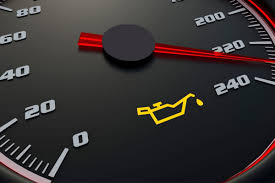
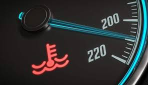
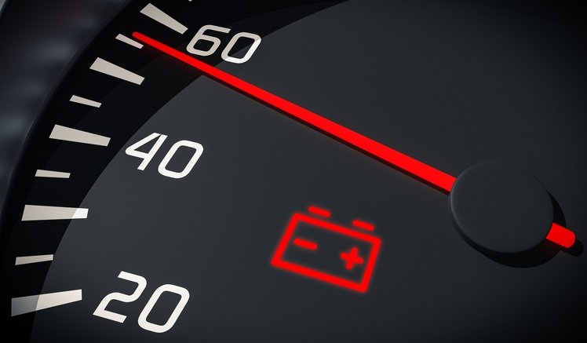

1. Introdução às Luzes de Painel
As luzes de painel do carro são sinais importantes que informam ao motorista sobre o funcionamento do veículo. Cada luz tem uma função específica e deve ser tratada com a devida atenção.
Dica Prática: Se ouvir ruídos ao frear, leve o carro ao mecânico para verificar as pastilhas.
2. Luz do Motor (Check Engine)
Uma das luzes mais comuns e importantes é a luz do motor, também conhecida como "Check Engine". Quando essa luz acende, pode indicar um problema no motor ou no sistema de emissões.
Dica Prática: Se a luz do motor acender, é recomendável levar o veículo a um mecânico para diagnóstico, mesmo que o carro esteja funcionando normalmente.

3. Luz de Óleo
A luz de óleo acende quando o nível de óleo do motor está baixo ou quando a pressão do óleo está insuficiente.
Dica Prática: Verifique o nível de óleo imediatamente ao acender a luz. Se o nível estiver baixo, complete com o óleo adequado.

4. Luz de Temperatura do Motor
A luz de temperatura acende quando o motor está superaquecendo. Isso pode ser causado por problemas no sistema de arrefecimento, como falta de água no radiador ou falha na bomba de água.
Dica Prática: Se essa luz acender, pare o carro imediatamente e deixe o motor esfriar. Verifique o nível de água do radiador e procure um mecânico.

5. Luz de Bateria
A luz da bateria acende quando há um problema no sistema de carregamento do carro, como a falha do alternador ou um cabo solto.
Dica Prática: Se a luz da bateria acender, verifique a fiação e o alternador. Se o problema persistir, procure um profissional para evitar ficar na estrada com a bateria descarregada.

6. Luz de Freio
A luz de freio pode acender por várias razões, como o nível baixo de fluido de freio ou quando o sistema de freios precisa de manutenção.
Dica Prática: Verifique o nível do fluido de freio. Se a luz acender e o freio não estiver funcionando corretamente, leve o carro imediatamente a um mecânico.

7. Luz de ABS
A luz do ABS (Sistema de Antibloqueio de Rodas) acende quando há uma falha nesse sistema, que é responsável por evitar o travamento das rodas durante frenagens bruscas.
Dica Prática: Caso a luz do ABS acenda, verifique o sistema de frenagem o quanto antes para garantir que o sistema esteja funcionando corretamente.

8. Luz de Cinto de Segurança
A luz do cinto de segurança acende quando o motorista ou passageiro não está usando o cinto de segurança. Além de ser uma medida de segurança, é obrigatório por lei.
Dica Prática: Sempre use o cinto de segurança. Se a luz acender, pare o veículo com segurança e coloque o cinto.

9. Luz de Direção Hidráulica
A luz de direção hidráulica acende quando há falha no sistema de direção assistida do veículo, o que pode dificultar a manobra do carro.
Dica Prática: Se essa luz acender, é importante verificar o nível do fluido de direção e procurar um mecânico se necessário.

10. Luz de Airbag
A luz do airbag acende quando há um problema no sistema de segurança do veículo. Isso pode afetar a ativação do airbag em caso de acidente.
Dica Prática: Caso a luz do airbag acenda, leve o carro ao mecânico o mais rápido possível para garantir que o sistema esteja funcionando adequadamente.